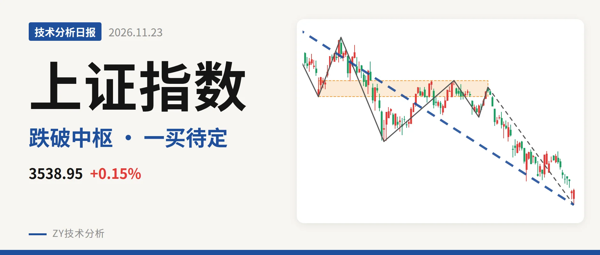

技术分析日报 · 2026-11-23

上证指数 3538.95 +0.15%
跌破3928点中枢，暂定一买无背驰

沪深300 3954.57 -0.76%
新低3894点，一买暂定

中证500 6006.08 -3.93%
中枢失守，6006一买待定

中证2000 2443.92 +3.91%
失守2585点中枢，暂定一买2297

中证红利 5492.17 -0.68%
反弹高点续降，5386点下沿待守

创业板指 2212.13 -3.54%
失守3227点，2212.13点暂成一买
⚠️ 本文为基于公开行情数据的缠论技术结构记录，由程序自动计算并生成，仅供学习交流，不构成任何投资建议。市场有风险，投资需谨慎。